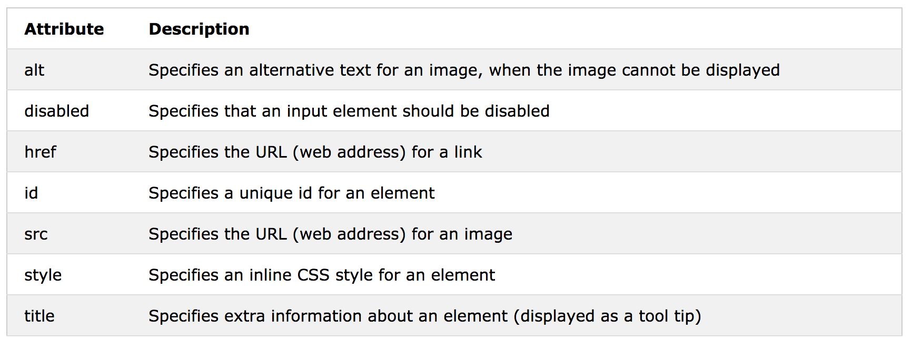
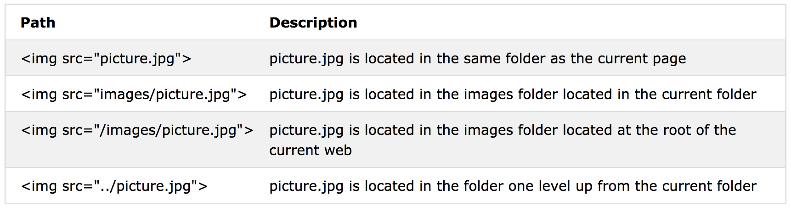
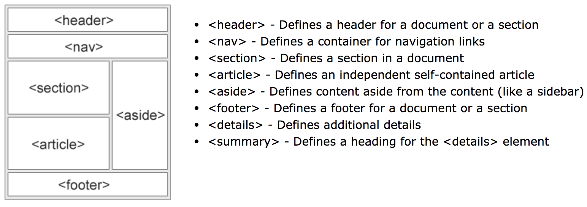
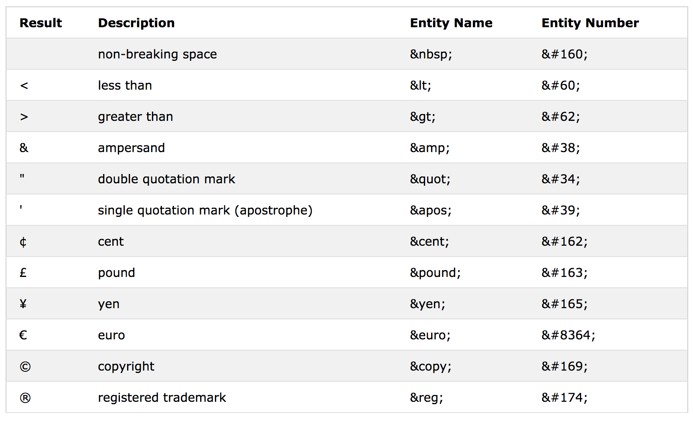

Todos los tags comienzan así: "< _ >". El tag para finalizar es "< / _ >".
La estructura se ve así: < tag> Contenido < /tag > (sin espacios).
Cada uno de estos es un elemento: html, body, h,p. Elementos sin contenido se llaman elementos vacíos y no requieren tag de cirre. < br > es un elemento vacío que genera otro renglón.
Ejemplo de < br >:
Esta es una línea.
Esta es otra.
1. Se define tipo de documento con !DOCTYPE html
2. "Backstage" del documento: todo lo que define al doc (el nombre de la pagina web, por ejemplo) que no aparece en la página. Todo lo que está entre los tags de head es la metadata (data about data) del documento: < title>, < style>, < meta>, < link> (external style links), < script>, and < base>.
3. Comienza el body del documento.
!DOCTYPE html html head title _ /title body Cuerpo del documento /body /html
< h1 > < /h1 > título - hasta h6
< p > < /p > párrafo
< br > siguiente renglón (empty element-sin comando de cierre)
< hr > crea una línea divisoria (empty element)
< pre >< /pre > conserva el formato que se dé en el editor de textos sin requerir p o br. La fuente dentro del pre es diferente a la predeterminada de p o h. Introducir h o p dentro de pre ignora el formato predeterminado.
< !-- comentario --> Hacer comentarios en el código tal que no aparezcan en la página.
< a > < /a > Hipervínculo
Sobre idiomas, links, imagenes,v ...
Proveen informacion adicional para la página
name="value".
Declara el idioma para bases de búsqueda. Se define al inicio del documento, en html.
< html lang="en-US">
Información adicional al texto. Se define en p.
title="blah"
Se recomienda siempre utilizar doble comilla para el valor del atributo; se pueden combinar comillas sencillas para titulos: title="Juan 'El salvador' Prz."
Para generar ligas. En el tag < a >. El link va entre comillas, seguido del texto a ligar.
< a href="liga"> Texto para la liga < /a >
Link a atributos
Por default, una liga se verá subrallado y de los siguientes colores:
Azul: sin visitar
Morada: visitada
Roja: activa
Para personalizar los colores, se utiliza ujn style en el head del documento:
< style>
a:link {
color: green;
background-color: transparent;
text-decoration: none;
}
a:visited {
color: pink;
background-color: transparent;
text-decoration: none;
}
a:hover {
color: red;
background-color: transparent;
text-decoration: underline;
}
a:active {
color: yellow;
background-color: transparent;
text-decoration: underline;
}
< /style>
TARGET
blank - Opens the linked document in a new window or tab
self - Opens the linked document in the same window/tab as it was clicked (this is default)
parent - Opens the linked document in the parent frame
top - Opens the linked document in the full body of the window
framename - Opens the linked document in a named frame
Imagen como link
< a href="default.asp"> < img src="imagen.jpg/png/gif" alt="lectura de imagen" style="width:42px;height:42px;border:0"> < /a>
Link a capítulos
< a href="#C4">Ir a referencias < /a>
< h2 id="C4">Referencias< /h2> Ir a ReferenciasNombre del archivo y tamaño:
< img src="wabi.png" width="104" height="142">
Las medidas están en pixeles por default, pero también se puede especificar el tamaño con style:
< img src="wabi.png" alt="texto" style="width:104px;height:142px
Las imágenes pueden estar en el mismo folder y servidor, y también se puede referenciar a otro folder/servidor con la liga y el path correspondiente.
Provee información textual alternativa a la imagen para lector de textos
< img src="w3schools.jpg" alt="W3Schools.com" width="104" height="142">

< tagname style="property:value;"> Color: Fondo del documento: < body style="background-color:powderblue;">. Fondo de un texto: < p style="background-color:green"> < /p> Títulos: < h1 style="color:blue;">heading Parrafos: < p style="color:red;">paragraph.< /p> Fuente: < h1 style="font-family:verdana;"> heading< /h1 > < p style="font-family:courier;"> paragraph.< /p > Tamaño: < h1 style="font-size:300%;">This is a heading< /h1 > < p style="font-size:160%;">This is a paragraph.< /p > Alineación: < h1 style="text-align:center;">Centered Heading< /h1 > < p style="text-align:left;">Lefted paragraph.< /p >
paragraph
Se utilizan tags de formato para resaltar el texto visual y semánticamente. Requieren tag de cierre < /_ >. Visual: para el lector < b > - Bold text < /b > < i > - Italic text < mark > - Marked text < small > - Small text < del >- Deleted text< ins > - Inserted text < sub > - Subscript text < sup > - Superscript text Semantic: para el lector y metadata < strong > - Important text < /strong > < em > - Emphasized text
Citar un texto largo:
< blockquote cite="http://www.blah.blu">Texto.< /blockquote>:
Este es un ejemplo de una cita larga. Aparece indentada. El sitio indicado entre los tags no aparece en la página, al menos que alguien decida inspeccionar el código.
Citas cortas:
Para utilizar comillas, se utiliza el tag < q > < /q >: Aunque es más fácil ponerlas en el documento, esto asegura que no se pierdan por un lector
Abreviatura:
Similar al atributo title, proporciona información adicional para una abreviatura:
< abbr title="World Health Organization">WHO< /abbr >: WHO
Dirección:
< address>< /address>:
Citar título de un texto:
< cite > < /cite >: Citamos El Resplandor y queda con formato.
Dirección del texto:
Bi-directional override. Indica la dirección del texto:
< bdo dir="rtl"> Texto de derecha a izquierda < /bdo >
Texto de derecha a izquierda
< table style="width:100%" id="idt"> < caption > Título de tabla < /caption > < tr > Fila < th > Título de fila. En negritas y centrado por default.< /th > < th colspan="2"> Una fila, dos columnas< /th > < /tr > Cerrar fila < tr > Siguiente fila < td rowspan="2"> contenido de columna: ocupa una columna, dos filas< /td > < td > contenido de siguiente columna < /tr > < /table >
Los bordes se definen dentro de head, generalmente:
< style >
table#idt, th, td {
border: 1px solid black;
border-collapse: collapse; "que aparezca una línea en lugar de dos separadas"
ó border-spacing: 15px; "Separación entre las líneas de encuadre"
}
th, td {
padding: 15px; "separación de los bordes"
text-align: left; "alineación del texto"
}
table#t01 tr:nth-child(even) {
background-color: #eee;
}
table#t01 tr:nth-child(odd) {
background-color:#fff;
}
table#t01 th {
background-color: black;
color: white;
}
< /style >
|
Viñetas sin orden: < ul style="list-style-type:disc">
< li>Coffee< /li> |
|
|
Viñetas con orden: < ol type="1"> |
|
Lista descriptiva: < dl > |
|
Puede haber listas dentro de listas. Se abre una nueva lista antes de cerrar la primera:
Div: Define bloques, se le puede dar estilo. Ocupa toda la extensión de la página.
< div class="clase, referencia" style="background-color:black;color: white; padding: 20px" >
Contenido del bloque.
Span: Separar texto dentro de una línea para darle énfasis.
El texto va entre los símbolos < span class="nombre" style:"color:red"> < /span >, con ejemplo de estilo.
Se hace style> div.clase { propiedades }; span.nombre {props}< iframe src="URL" height="200" width="300" style:"border: propiedades">< /iframe>

< meta charset="UTF-8"> < meta name="description" content="Free Web tutorials"> < meta name="keywords" content="HTML,CSS,XML,JavaScript"> < meta name="author" content="John Doe"> Refresh every 30 seconds. < meta http-equiv="refresh" content="30"> Viewport - cómo aparece el documento en diferentes dispositivos < meta name="viewport" content="width=device-width, initial-scale=1.0"> Base: base url and base target for links < base href="https://www.w3schools.com/images/" target="_blank">
Se le da style en head.

< code> bla < /code> User input < kbd > Ctrl + s < /kbd > Program output < samp> Error! < /samp > Variables < var > X < /var >
